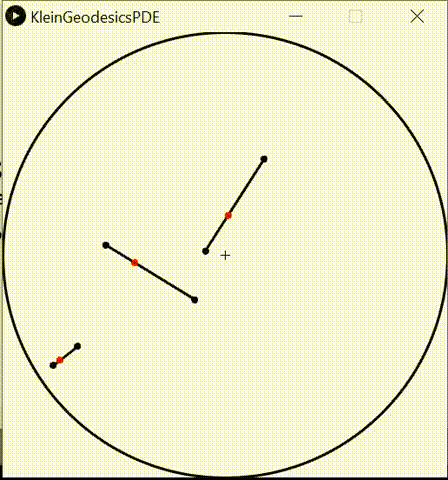
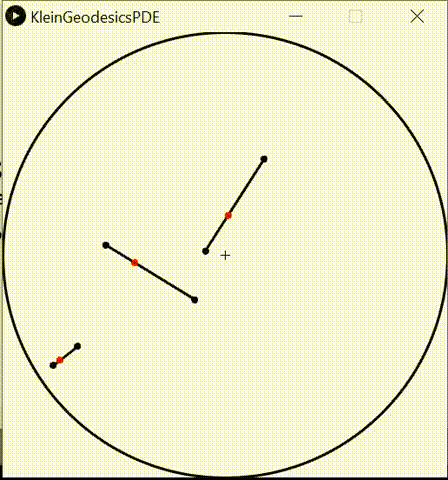

Information geometry and divergences
Historically, Information Geometry (IG, tutorials) aimed at unravelling the geometric structures
of families of probability distributions called the statistical models.
A statistical model can either be
- parametric (eg., family of normal distributions),
- semi-parametric
(eg., family of Gaussian mixture models) or
- non-parametric (family of mutually absolutely continuous smooth densities).
A parametric statistical model is said regular when the Fisher information matrix is positive-definite (and well-defined).
Otherwise, the statistical model is irregular (eg., infinite Fisher information and semi-positive definite Fisher information when the model is not identifiable).
The Fisher-Rao manifold of a statistical parametric model is a Riemannian manifold equipped
with the Fisher information metric.
The geodesic length on a Fisher-Rao manifold is called Rao's distance [Hotelling 1930][Rao 1945].
More generally, Amari proposed the dualistic structure of IG which consists
of a pair of torsion-free affine connections coupled to the Fisher metric [Amari 1980's].
Given a dualistic structure, we can build generically a one-parameter family of
dualistic information-geometric structures,
called the α-geometry.
When both connections are flat, the information-geometric space is said dually flat:
For example, the Amari's ±1-structures of exponential families and mixture families
are famous examples of dually flat spaces in information geometry.
In differential geometry, geodesics are defined as autoparallel curves with respect to a connection.
When using the default Levi-Civita metric connection derived from the Fisher metric on Fisher-Rao manifolds,
we get Rao's distance which are locally minimizing geodesics.
Eguchi showed how to build from any smooth distortion (originally called a contrast function)
a dualistic structure: The information geometry of divergences [Eguchi 1982].
The information geometry of Bregman divergences yields dually flat spaces:
It is a special cases of Hessian manifolds which are differentiable manifolds
equipped with a metric tensor being a Hessian metric and a flat connection [Shima 2007].
Since geometric structures scaffold spaces independently of any applications,
these pure information-geometric Fisher-Rao structure and α-structures of statistical models
can also be used in non-statistical contexts too:
For example, for analyzing interior point methods with barrier functions in optimization, or for studying time-series models, etc.
Statistical divergences between parametric statistical models amount to
parameter divergences on which we can use the Eguchi's divergence information geometry
to get a dualistic structure.
A projective divergence is a divergence which is invariant by independent rescaling of its parameters.
A statistical projective divergence is thus useful for estimating computationally
intractable statistical models (eg., gamma divergences, Cauchy-Schwarz divergence and Hölder divergences, or singly-sided projective Hyvärinen divergence).
A conformal divergence is a divergence scaled by a conformal factor which may depend on one or two of its arguments.
The metric tensor obtained from Eguchi's information divergence of a conformal divergence
is a conformal metric of the metric obtained from the divergence, hence its name.
By analogy to total least squares vs least squares, a
total divergence is a divergence which is invariant wrt. to rotations (eg., total Bregman divergences).
An important property of divergences on the probability simplex is to be monotone by coarse-graining.
That is, merging bins and considering reduced histograms should give a distance less or equal than the distance on the full resolution histograms.
This information monotonicity property holds for f-divergences (called invariant divergences in information geometry),
Hilbert log cross-ratio distance, or Aitchison distance for example.
Some statistical divergences are upper bounded
(eg., Jensen-Shannon divergence) while others are not (eg., Jeffreys' divergence).
Optimal transport distances require a ground base distance on the sample space.
A diversity index generalizes a two-point distance to a family of parameters/distributions.
It usually measures the dispersion around a center point (eg., like variance measures
the dispersion around the centroid).
Browsing geometric structures:
[tutorials]
[Fisher-Rao manifolds]
[Cones]
[Finsler manifolds]
[Hessian manifolds]
[Exponential families and mixture families]
[Categorical distributions/probability simplex]
[Time series]
[Hilbert geometry]
[Hyperbolic geometry and Siegel spaces]
[Applications]
[Natural gradient]
[centroids and clustering]
[Miscellaneous applications]
Browsing [Dissimilarities]:
[Jensen-Shannon divergence]
[f-divergences]
[Bregman divergences]
[Jensen divergences]
[conformal divergences]
[projective divergences]
[optimal transport]
[entropies]
[Chernoff information]
Information geometry: Tutorials and surveys
 The Many Faces of Information Geometry, AMS Notices (9 pages), 2022.
The Many Faces of Information Geometry, AMS Notices (9 pages), 2022.
A gentle short introduction to information geometry
- An Elementary Introduction to Information Geometry, Entropy (61 pages), 2020.
A self-contained introduction to classic parametric information geometry with applications and basics of differential geometry
- What is an information projection?, AMS Notices, (65) 3 (4 pages), 2018.
Information projections are the workhorses of algorithms using the framework of information geometry.
A projection is defined according to geodesics (wrt a connection) and orthogonality (wrt a metric tensor).
In dually flat spaces, information projections can be interpreted as minimum Bregman divergences (Bregman projections).
Unicity theorems for exponential families and mixture families.
- On Geodesic Triangles with Right Angles in a Dually Flat Space, Chapter in edited book "Progress in Information Geometry", Springer, 2021.
A self-contained introduction to dually flat spaces which we call Bregman manifolds. The generalized Pythagorean theorem is derived from the 3-parameter Bregman identity.
The 4-parameter Bregman identity is also explained
- Cramér-Rao Lower Bound and Information Geometry, Connected at Infinity II: On the work of Indian mathematicians (R. Bhatia and C.S. Rajan, Eds.), special volume of Texts and Readings In Mathematics (TRIM), Hindustan Book Agency, 2013
A description of the pathbreaking paper of Calyampudi Radhakrishna Rao (1945): "Information and the accuracy attainable in the estimation of statistical parameters", 1945.
-
Statistical exponential families: A digest with flash cards, 2009

-
Pattern Learning and Recognition on Statistical Manifolds: An Information-Geometric Review, SIMBAD 2013

- Legendre transformation and information geometry, memo, 2010
Fisher-Rao manifolds (Riemannian manifolds and Hamadard manifolds)
Cones
Finsler manifolds
Finsler manifolds are proposed to model irregular parametric statistical models (where Fisher information can be infinite)
Bregman manifolds/Hessian manifolds
Exponential families and Mixture families
Continuous or discrete exponential families
Online k-MLE for Mixture Modeling with Exponential Families, GSI 2015
k-MLE: A fast algorithm for learning statistical mixture models, IEEE ICASSP 2012
Fast Learning of Gamma Mixture Models with k-MLE, SIMBAD 2013: 235-249
k-MLE for mixtures of generalized Gaussians,
ICPR 2012: 2825-2828
Simplification and hierarchical representations of mixtures of exponential families,
Signal Process. 90(12): 3197-3212 (2010)
The analytic dually flat space of the statistical mixture family of two prescribed distinct Cauchy components
On the Geometry of Mixtures of Prescribed Distributions, IEEE ICASSP 2018
Information geometry of deformed exponential families
q-deformed exponential families, q-Gaussians, etc.
Information geometry of the probability simplex
Clustering in Hilbert simplex geometry
[project page]
Geometry of the probability simplex and
its connection to the maximum entropy method,
Journal of Applied Mathematics, Statistics and Informatics 16(1):25-35, 2020
Bruhat-Tits space
open access (publisher)
Information geometry of singular statistical models
A Geometric Modeling of Occam's Razor in Deep Learning
Towards Modeling and Resolving Singular Parameter Spaces using Stratifolds, Neurips OPT workshop 2021
Geometry of time series and correlations/dependences
Hilbert geometry
Hilbert geometry are induced by a bounded convex open domain.
Hilbert geometry generalize the Klein model of hyperbolic geometry and the Cayley-Klein geometry
Beware that Hilbert geometry are never Hilbert spaces!
Hyperbolic geometry and geometry of Siegel domains
Some applications of information geometry
Natural gradient
Centers and clustering
Miscellaneous applications
Dissimilarities, distances, divergences and diversities
Jensen-Shannon divergence
f-divergences
Bregman divergences and some generalizations
Jensen divergences and some generalizations
Conformal divergences
Projective divergences
Optimal transport/Wasserstein distances/Sinkhorn distances
Earth mover distances (EMD), Wasserstein distances
Shannon, Rényi, Tsallis, Sharmal-Mittal entropies, cross-entropies and divergences
Chernoff information
Other dissimilarities
Loss functions and proper scoring rules
Divergences between statistical mixtures
Edited books and proceedings
Home page of Geometric Science of Information
January 2022.


 
